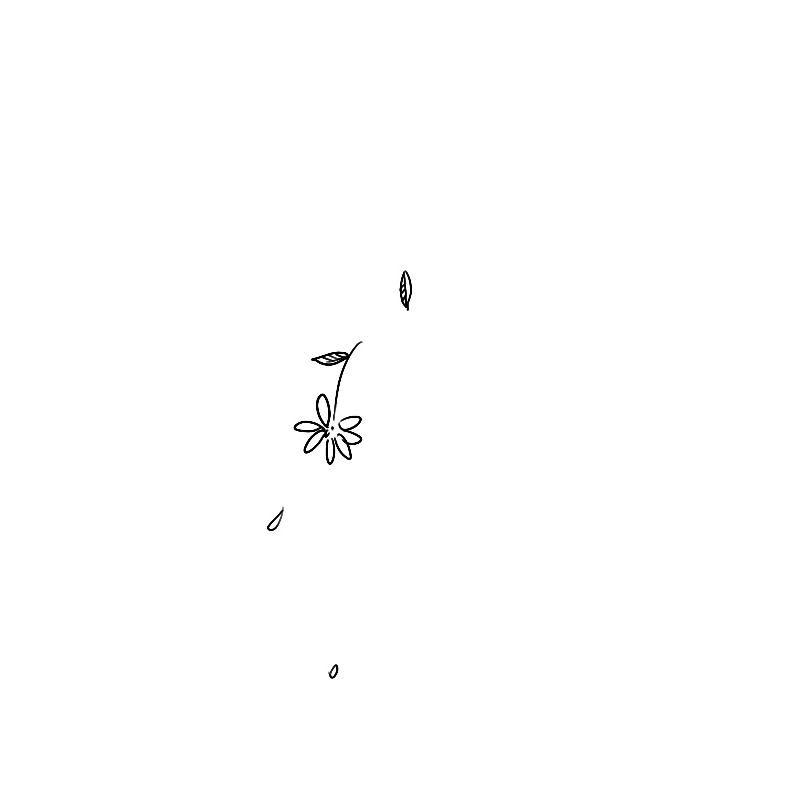
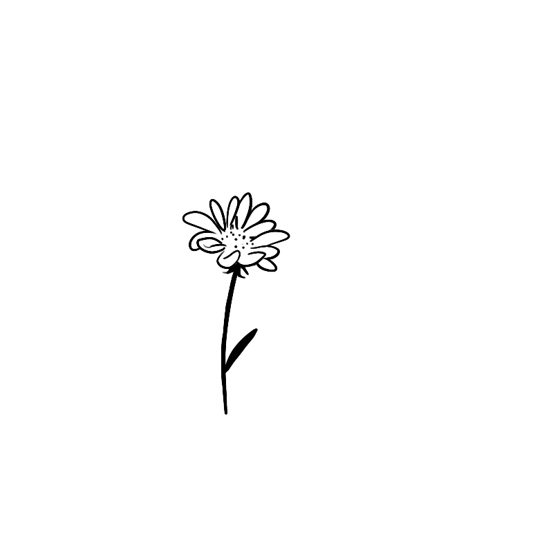
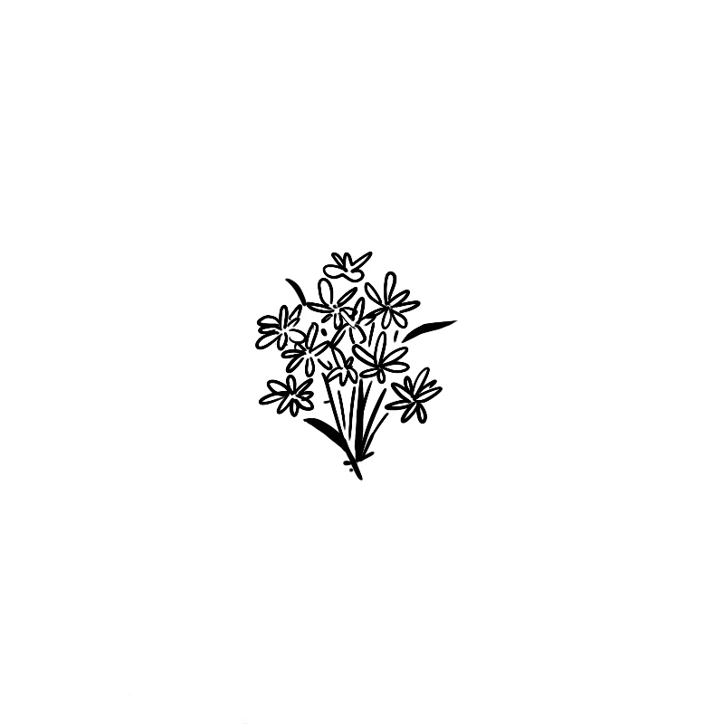
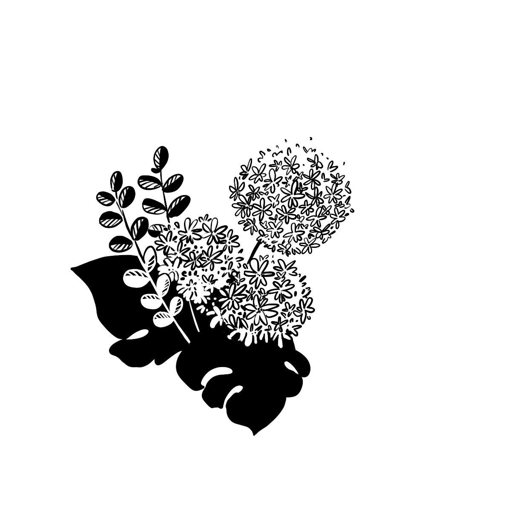
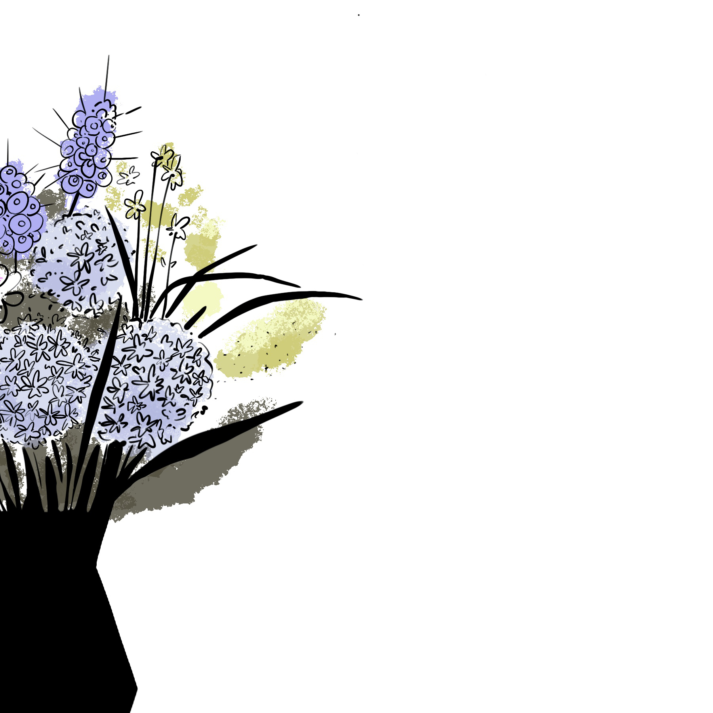
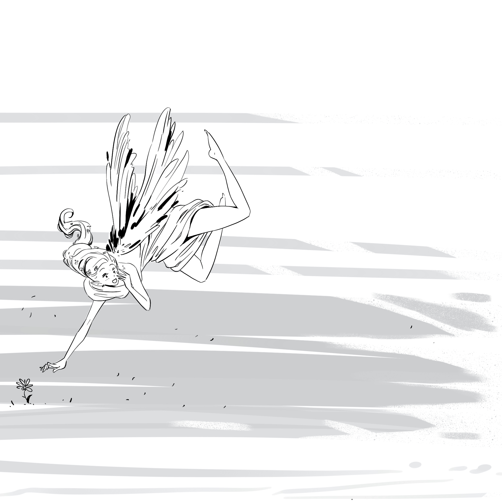

Every project starts with you knowing one small thing
...and doing it well
Then you add another one
You stack up more of the same
Until it's time to introduce variations
...and then you riff on the previous variation
...until you have a bouquet.
Here is a simple truth: When you can't help getting distraced by all the flowers in the whole world, remember,
you gotta pluck that humble daisy first.